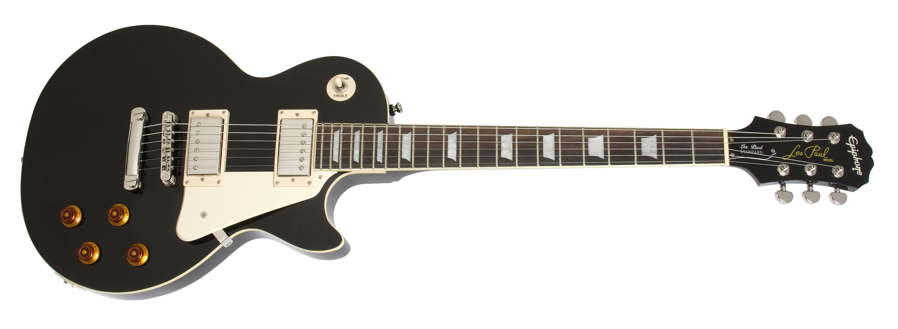
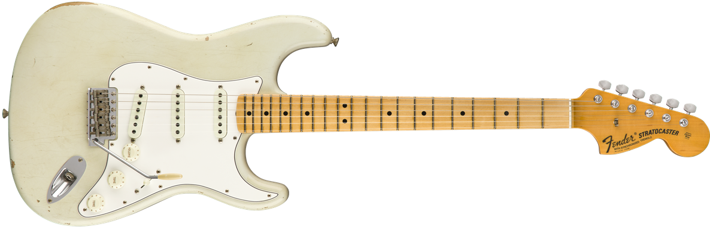
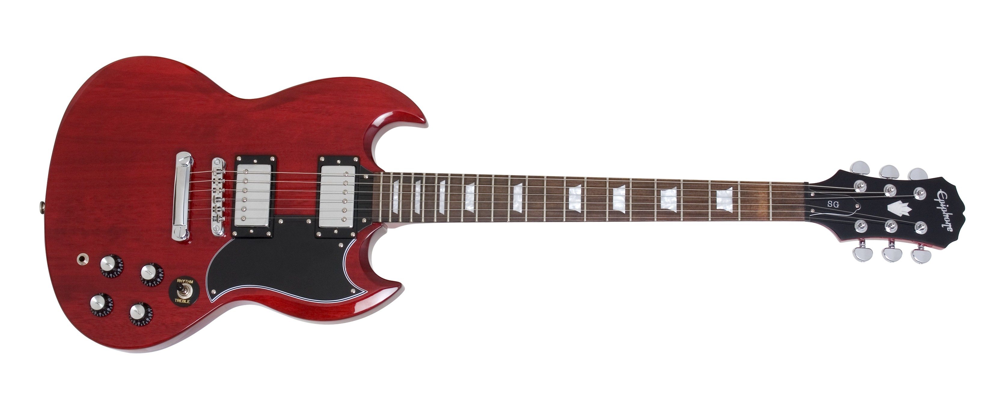
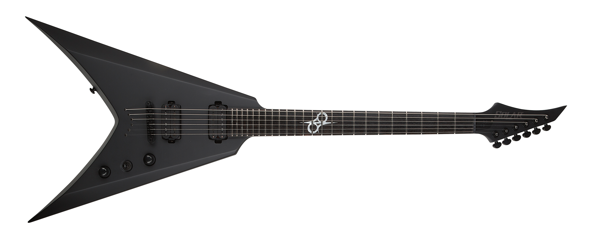
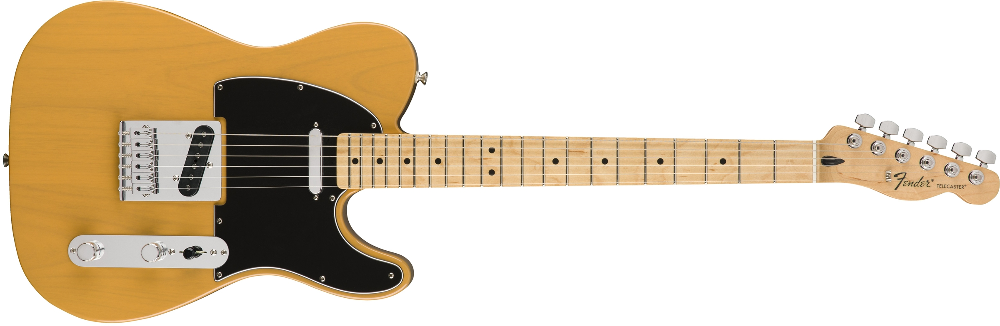

#1-Les paul♪

The Gibson Les Paul is a solid body electric guitar that was first sold by the Gibson Guitar Corporation in 1952.[3] The Les Paul was designed by Gibson president Ted McCarty, factory manager John Huis and their team. Its design typically comprises a solid mahogany body with a carved maple top and a single cutaway, a mahogany set-in neck with a rosewood fretboard, two pickups with independent volume and tone controls, and a stoptail bridge, although variants exist.
#2-stratocaster

The Fender Stratocaster is a model of electric guitar designed in 1954 by Leo Fender, Bill Carson, George Fullerton, and Freddie Tavares. The Fender Musical Instruments Corporation has continuously manufactured the Stratocaster from 1954 to the present. It is a double-cutaway guitar, with an extended top "horn" shape for balance. Along with the Gibson Les Paul and Fender Telecaster, it is one of the most-often emulated electric guitar shapes.[1][2] "Stratocaster" and "Strat" are trademark terms belonging to Fender. Guitars that duplicate the Stratocaster by other manufacturers are usually called S-Type or ST-type guitars.
#3-SG

The Gibson SG is a solid-body electric guitar model that was introduced in 1961 (as the Gibson Les Paul SG)[1] by Gibson, and remains in production today with many variations on the initial design available. The SG Standard is Gibson's best-selling model of all time.
#4-Flying V

he Gibson Flying V is an electric guitar model introduced by Gibson in 1958. The Flying V offered a radical, "futuristic" body design, much like its siblings: the Explorer, which was released the same year and the Moderne, which was designed in 1957 but not released until 1982.
#5-Telecaster

The Fender Telecaster, colloquially known as the Tele /ˈtɛli/, is the world's first commercially successful[note 1] solid-body electric guitar. Its simple yet effective design and revolutionary sound broke ground and set trends in electric guitar manufacturing and popular music. Introduced for national distribution as the Broadcaster in the autumn of 1950, it was the first guitar of its kind manufactured on a substantial scale and has been in continuous production in one form or another since its first incarnation.